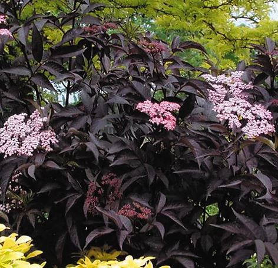
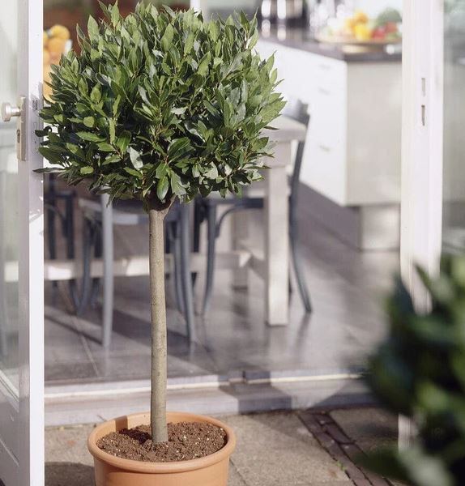
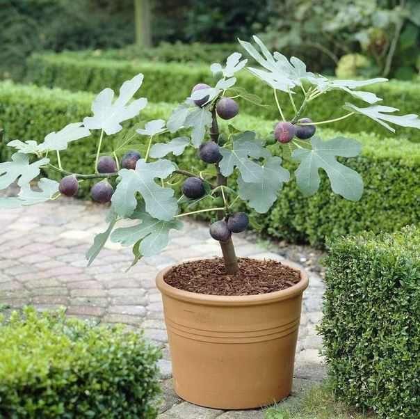
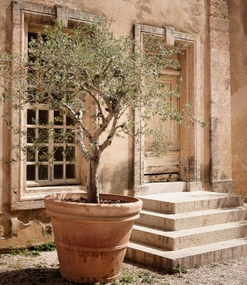
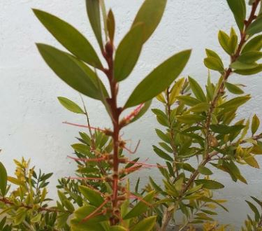

Container Plants
Back to Home
Sambucus
Nature: Deep blackish purple leaves turning red in autumn, pink-tinged flowers
Size: 8-10 feet, spreads 4 to 6 feer.
Habitat: Full Sun to Partial Shade
Prune: Pruning is not essential, but can be done to shape

Bay Leaf
Nature: The bay tree is a popular evergreen shrub suitable for containers or growing in the ground.
Size: Up to 7.5m (23ft) unless clipped.
Habitat: Full sun or partial shade.
Prune: Trimming your topiary bay in the summer not only maintains its attractive shape, but also encourages denser growth. .

Fig
Nature: Fig plants (Ficus carica) are popular fruit-bearing trees known for their sweet fruit and broad green leaves.
Size: Left to their own devices, figs (Ficus carica) can grow into large bushy trees.
Habitat: To maximise cropping, figs are best trained as a fan against a sunny wall and their roots restricted in a large container
Prune: Twice-yearly pruning also keeps these vigorous plants at a manageable size and improves fruiting. .

Olive
Nature: The olive tree, Olea europaea, is a classic Mediterranean tree.
Size: However, being slow-growing and usually only reaching a modest size, it makes a good garden tree in the UK.
Habitat: There are now many cultivars that tolerate cooler temperatures to choose from, although a sunny, sheltered location will get the best results.
Prune: Twice-yearly pruning also keeps these vigorous plants at a manageable size and improves fruiting. Avoid letting the compost dry out completely, and use a liquid seaweed feed once a fortnight from April to September to keep it growing well. .

Bottlebrush
Nature: Perennial shrub that is evergreen and attracts wild life
Size: 8-10 feet, spreads 4 to 6 feer.
Habitat: Full Sun to Partial Shade
Prune: